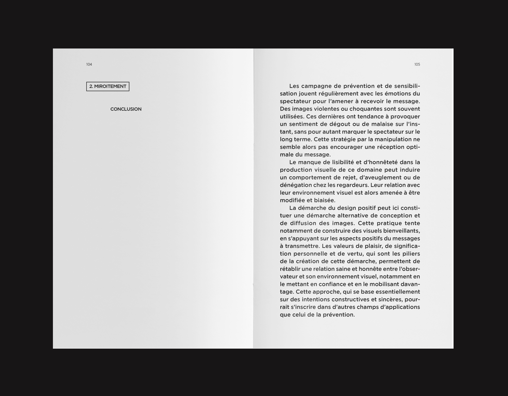
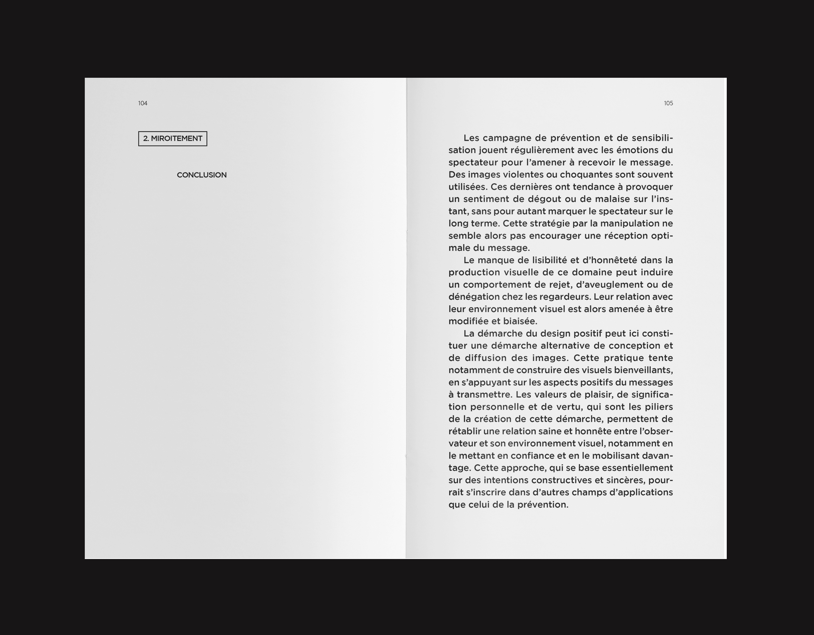

Ce mémoire de recherche, réalisé dans le cadre de mon DSAA,
propose une réflexion critique aussi bien sur l'impact que
peut avoir le design graphique sur notre environnement visuel
et les regardeurs qui l'habitent, que sur les différentes pratiques
de conception et de diffusion qui définissent visuellement cet environnement.
En quoi est-il aujourd'hui nécessaire de se tourner vers une pratique du
design graphique bienveillante ?
Il s'agit dans cette édition de mettre
en avant des alternatives de création et de mise en circulation des
productions visuelles qui permettront de ré-instaurer une éthique de
conception, mais également une relation plus saine entre le regardeur
et son paysage visuel, notamment en déclanchant des types de comportement
stimulants et positifs.
Édition de 164 pages,
tirée à 5 exemplaires
Avril 2018


 
